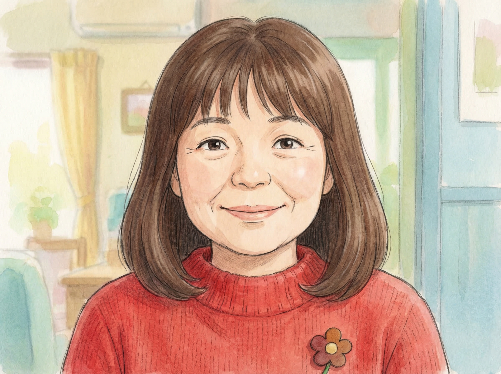
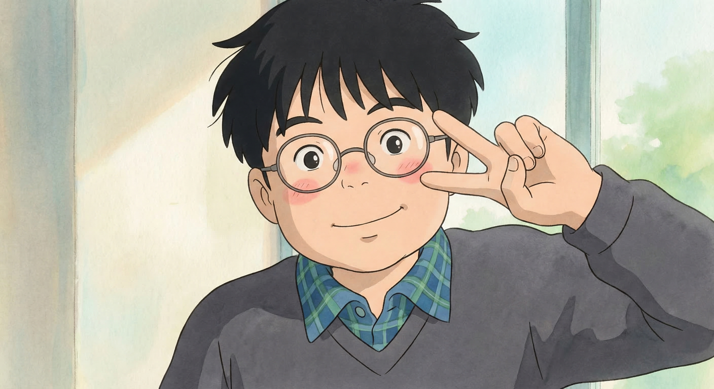
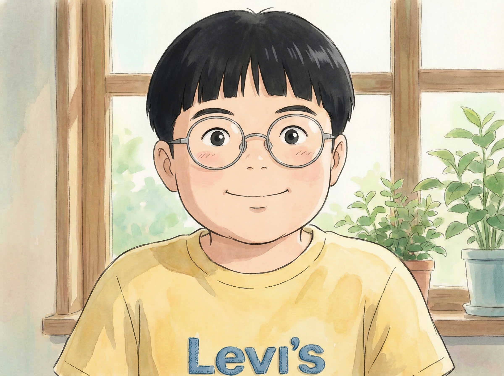
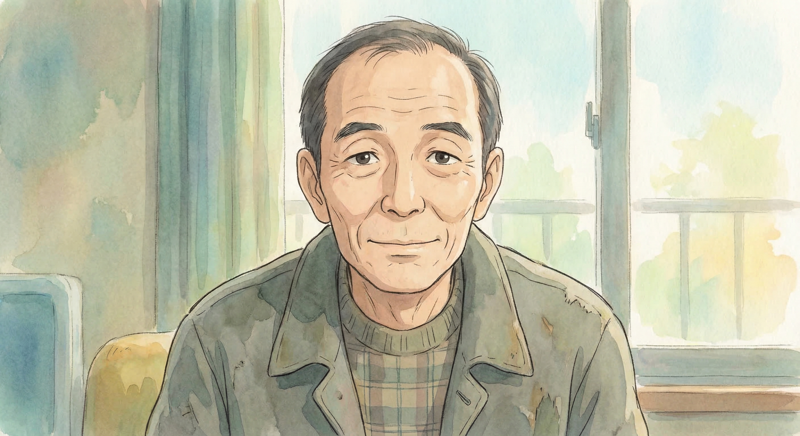
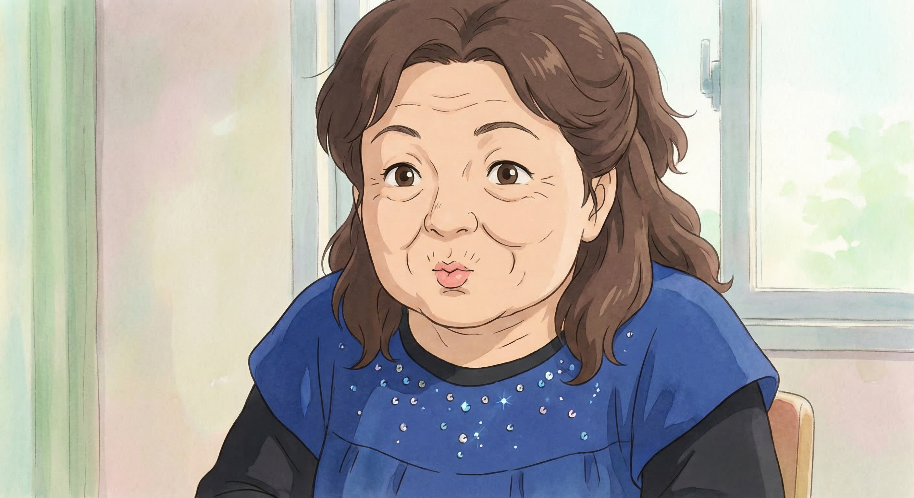

6 個核心角色 · 宮崎駿動畫風格 AI 生成 · 第二版
開朗樂觀、金屬細框眼鏡、灰色上衣

溫柔親切、棕色中長髮、紅色上衣

活潑調皮、細框圓眼鏡、灰色上衣

可愛帥氣、金屬圓框眼鏡、黃色上衣

樸實沉穩、瘦長臉、灰綠色上衣

活潑可愛、圓臉、寶藍色上衣
🎨 使用 Gemini 3 Pro Image API 生成 · 真正的 AI 創作
生成時間：2026-03-14 07:22 AM
基於恩齊提供的真實照片分析，確保角色更像真實人物！